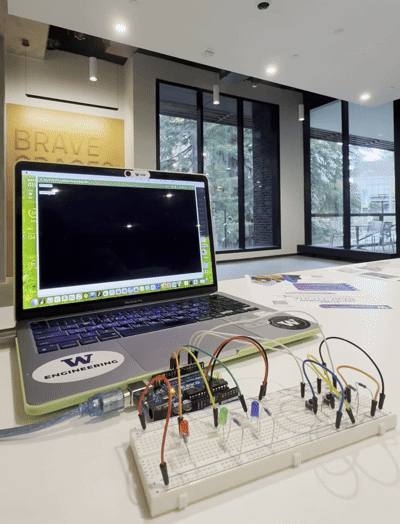
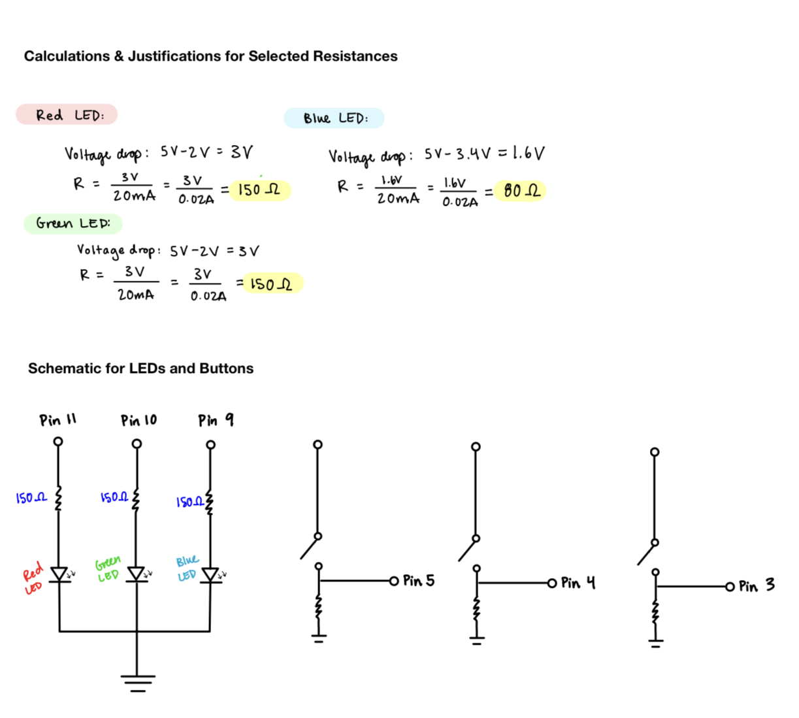
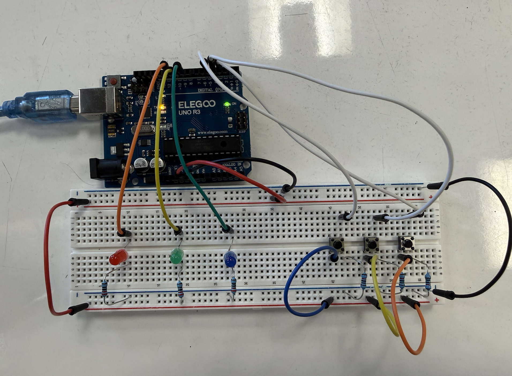

In Assignment 6, I created a prototype that changes the web screen's color based on the buttons you push!

Above are my calculations for the current, which determined the value of resistors I used. For the Red LED and Green LED, the calculated resistance, based on a recommended 20mA current draw from each pen, is 150 Ohms. For the Blue LED, the calculated resistance is 80 Ohms. For the three buttons, I used 10k Ohm resistors to bring the voltage to 0 when the switches are open.

Here is a photo of the circuit I put together, based on my calculations.
// Set the pin for the red LED
const int redPin = 11;
// Set the pin for the green LED
const int greenPin = 10;
// Set the pin for the blue LED
const int bluePin = 9;
// Set the pin for the red button
const int redButtonPin = 5;
// Set the pin for the green button
const int greenButtonPin = 4;
// Set the pin for the blue button
const int blueButtonPin = 3;
// Store the red button state
int redButtonState = 0;
// Store the green button state
int greenButtonState = 0;
// Store the blue button state
int blueButtonState = 0;
void setup() {
// Set the red LED pin as an output
pinMode(redPin, OUTPUT);
// Set the green LED pin as an output
pinMode(greenPin, OUTPUT);
// Set the blue LED pin as an output
pinMode(bluePin, OUTPUT);
// Set the red button pin as an input
pinMode(redButtonPin, INPUT);
// Set the green button pin as an input
pinMode(greenButtonPin, INPUT);
// Set the blue button pin as an input
pinMode(blueButtonPin, INPUT);
// Begin serial communication at 9600 baud
Serial.begin(9600);
}
void loop() {
// Check whether any serial data has arrived
if (Serial.available()) {
// Read the incoming command until newline
String cmd = Serial.readStringUntil('\n');
// Remove whitespace and newline characters
cmd.trim();
// If the command is "ALL_ON", turn on all LEDs
if (cmd == "ALL_ON") {
digitalWrite(redPin, HIGH);
digitalWrite(greenPin, HIGH);
digitalWrite(bluePin, HIGH);
// Keep all LEDs on briefly
delay(1000);
}
}
// Read the red button state (0 or 1)
redButtonState = digitalRead(redButtonPin);
// Read the green button state
greenButtonState = digitalRead(greenButtonPin);
// Read the blue button state
blueButtonState = digitalRead(blueButtonPin);
// Set the red LED based on the button state
digitalWrite(redPin, redButtonState);
// Set the green LED based on the button state
digitalWrite(greenPin, greenButtonState);
// Set the blue LED based on the button state
digitalWrite(bluePin, blueButtonState);
// Send the red button state to p5.js
Serial.print(redButtonState);
// Send a comma separator
Serial.print(",");
// Send the green button state
Serial.print(greenButtonState);
// Send another comma separator
Serial.print(",");
// Send the blue button state and end the line
Serial.println(blueButtonState);
// Small delay to prevent overwhelming the serial buffer
delay(20);
}
// Set the baud rate for Arduino communication
const BAUD_RATE = 9600;
// Create variables for the serial port and the UI buttons
let port, connectBtn, lightAllBtn;
// Store the button states coming from the Arduino
let redState = 0;
let greenState = 0;
let blueState = 0;
function setup() {
// Initialize the serial connection setup
setupSerial();
// Create a full-screen drawing canvas
createCanvas(windowWidth, windowHeight);
// Set the font family and size for on‑screen text
textFont("system-ui", 32);
// Use bold text styling
textStyle(BOLD);
// Center-align all text horizontally and vertically
textAlign(CENTER, CENTER);
// Create the on‑screen button that lights all LEDs
lightAllBtn = createButton("Light All LEDs");
// Position the button on the webpage
lightAllBtn.position(10, 60);
// Send a command to Arduino when the button is clicked
lightAllBtn.mouseClicked(() => {
if (port.opened()) {
port.write("ALL_ON\n");
console.log("Sent: ALL_ON");
}
});
}
function draw() {
// Check whether the serial port is open
const portIsOpen = checkPort();
// Stop drawing if the port is not connected
if (!portIsOpen) return;
// Read a full line of text from Arduino
let str = port.readUntil("\n");
// Ignore empty reads
if (str.length === 0) return;
// Remove whitespace and newline characters
str = str.trim();
// Log incoming serial data for debugging
console.log("Incoming:", str);
// Split the incoming CSV string into three values
let parts = str.split(",");
// Validate that all three values exist
if (parts.length === 3) {
// Convert the red button value to a number
redState = Number(parts[0]);
// Convert the green button value to a number
greenState = Number(parts[1]);
// Convert the blue button value to a number
blueState = Number(parts[2]);
}
// Convert button states (0 or 1) into RGB intensities
let r = redState * 255;
let g = greenState * 255;
let b = blueState * 255;
// Update the background color based on button states
background(r, g, b);
// Set the text color to black
fill(0);
// Set the text size for labels
textSize(24);
// Display the raw incoming string
text(`Buttons Pressed: ${str}`, width / 2, 40);
// Display the red button state
text(`Red: ${redState}`, width / 2, 80);
// Display the green button state
text(`Green: ${greenState}`, width / 2, 120);
// Display the blue button state
text(`Blue: ${blueState}`, width / 2, 160);
}
function setupSerial() {
// Create a new serial port object
port = createSerial();
// Attempt to reconnect to the last used serial port
let used = usedSerialPorts();
if (used.length > 0) {
port.open(used[0], BAUD_RATE);
}
// Create the connect/disconnect button
connectBtn = createButton("Connect to Arduino");
// Position the button on the webpage
connectBtn.position(10, 10);
// Assign the click handler for connecting/disconnecting
connectBtn.mouseClicked(onConnectButtonClicked);
}
function checkPort() {
// If the port is not open, update UI and stop drawing
if (!port.opened()) {
connectBtn.html("Connect to Arduino");
background("grey");
return false;
}
// If the port is open, update the button label
connectBtn.html("Disconnect");
// Indicate that the port is open
return true;
}
function onConnectButtonClicked() {
// Open the serial port if it is currently closed
if (!port.opened()) {
port.open(BAUD_RATE);
}
// Otherwise, close the serial port
else {
port.close();
}
}
AI was used only to format the Arduino code to be readable on this webpage.